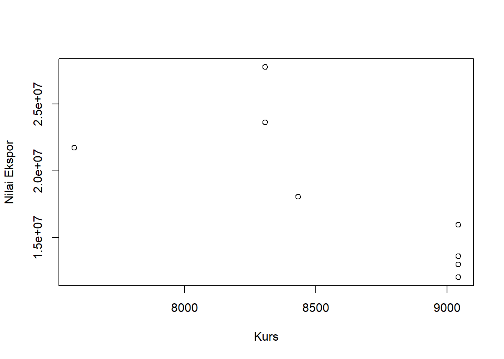
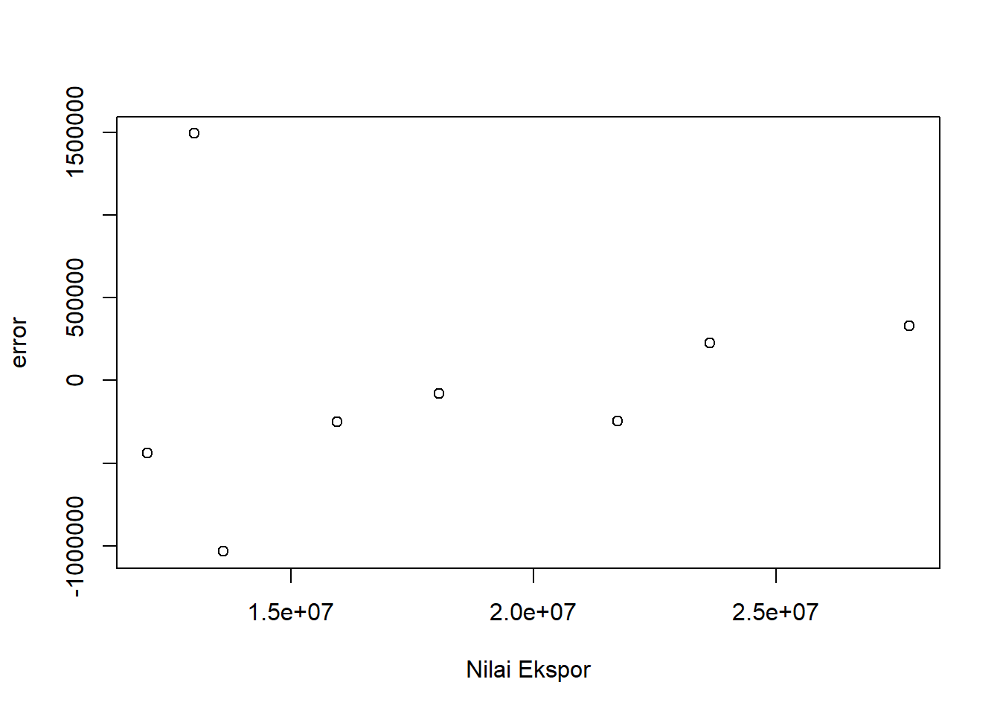
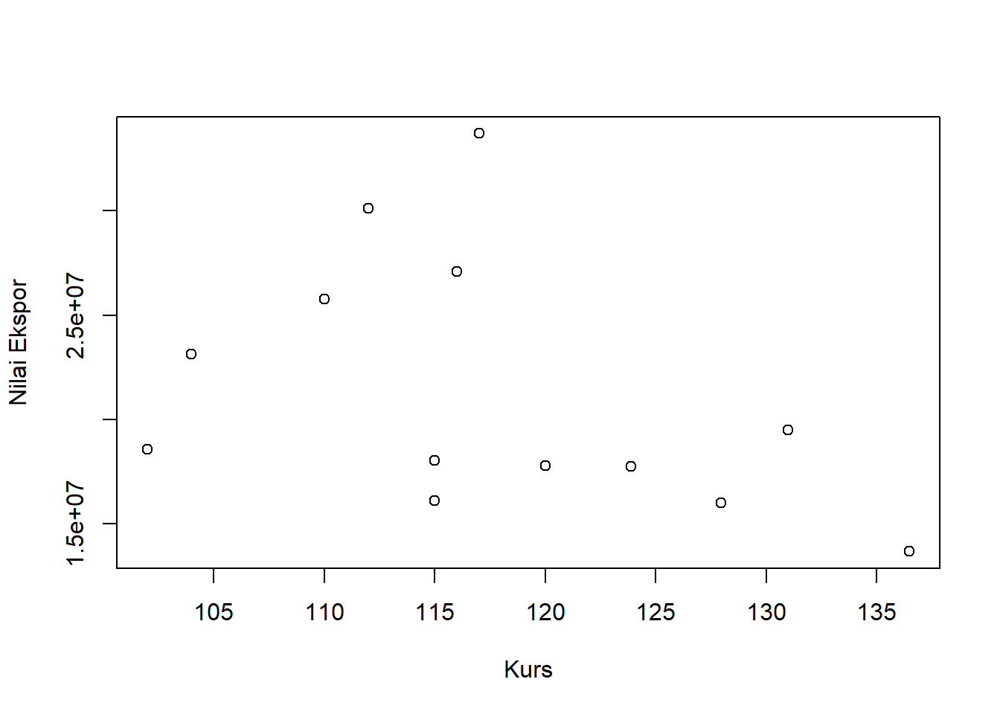
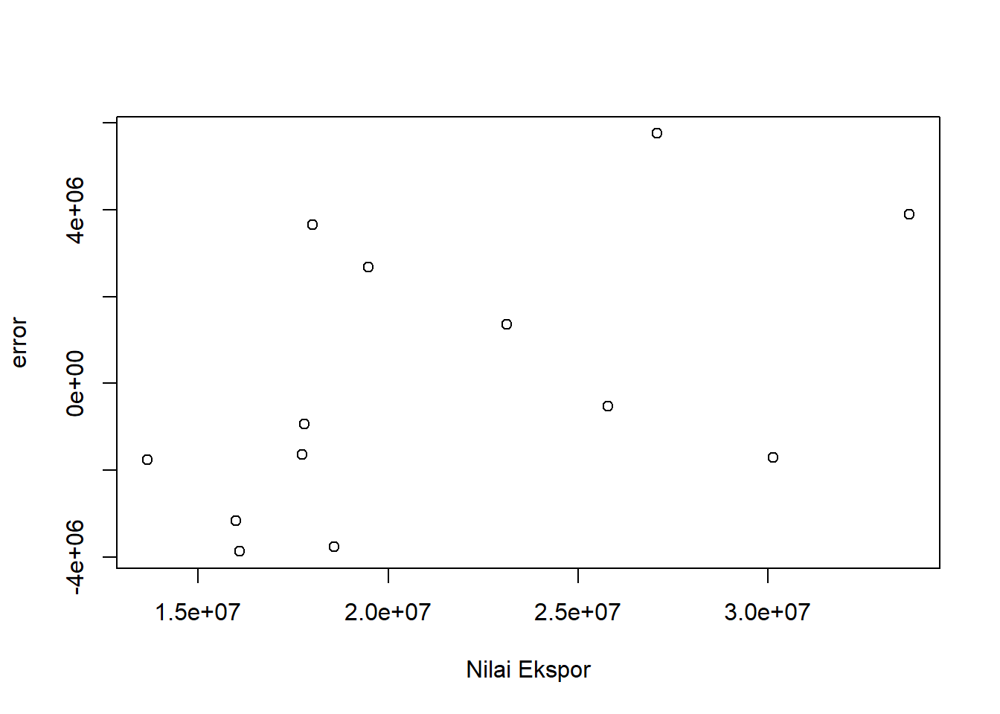

library(tidyverse)
library(readxl)
library(WDI) # tambahkan library lain jika diperlukanAnalisis Dampak Indonesian Japan Economic Partnertship Agreement (IJEPA) Terhadap Nilai Ekspor Indonesia
Metode Penelitian Politeknik APP Jakarta

1 Pendahuluan
1.1 Latar belakang
Perekonomian negara-negara di dunia semakin terintegrasi karena adanya globalisasi yang memudahkan arus informasi, barang dan jasa dari satu negara ke negara lain. Hal ini menjadi dasar perdagangan internasional yang berperan penting dalam pertumbuhan ekonomi negara-negara di dunia, termasuk Indonesia. Perdagangan internasional juga dapat memberikan keuntungan bagi negara dengan menghasilkan produk yang memiliki keunggulan komparatif dan juga mendapatkan pasar yang lebih luas, namun di sisi lain juga memberikan peluang yang baik bagi produk luar negeri yang lebih murah dan berkualitas untuk masuk ke pasar domestik. Hal ini membuat setiap negara berlomba menerapkan strategi yang berbeda untuk mencapai daya saing yang kuat di pasar internasional.
Pemerintah Indonesia secara agresif mengembangkan berbagai strategi diplomasi dan menempuh kebijakan perdagangan luar negeri melalui berbagai Perjanjian Perdagangan Bebas (FTA) bilateral dan multilateral, salah satunya adalah Indonesia-Japan Economic. Perjanjian perdagangan bebas pertama sebagai bagian dari perjanjian kerja sama ekonomi bilateral yang dibuat Indonesia dengan negara mitra adalah IJEPA (Indonesia Japan Economic Partnership Agreement). Perjanjian tersebut disusun untuk memberikan manfaat bagi kedua belah pihak secara adil, seimbang dan terukur melalui liberalisasi akses pasar, fasilitasi dan kerjasama melalui peningkatan kapasitas di industri prioritas. Perjanjian IJEPA mencakup 11 bidang, antara lain perdagangan barang, aturan asal barang dan tata cara kepabeanan. Kesepakatan tersebut ditandatangani oleh kepala negara Indonesia dan Jepang di Jakarta pada tanggal 20 Agustus 2007 dan mulai berlaku pada tanggal 1 Juli 2008. Salah satu unsur utama dari kesepakatan lintas sektoral IJEPA adalah perdagangan barang.
Negara Jepang merupakan salah satu negara partner utama bagi Indonesia baik dalam hal perdagangan maupun investasinya. Menurut data dari publikasi Badan Pusat Statistik Indonesia, Jepang merupakan negara tujuan ekspor terbesar ketiga bagi Indonesia dengan total nilai ekspor sebesar 1.203,0 juta US$ pada tahun 2021. Selain itu, perkembangan ekspor Indonesia dengan Jepang berdasarkan hasil nilai ekspor pada tahun 2001-2021 yang diperoleh dari trademap memperlihatkan bahwa Sebelum implementasi IJEPA perkembangan ekspor impor cenderung mengalami peningkatan di setiap tahunnya, dimana total ekspor mencapai 145.778.802 ribu US$ dengan nilai rata-rata sebesar 18.222.350 ribu US$ pada tahun 2008. Pada pasca implementasi IJEPA nilai perdagangan ekspor semakin besar dibandingkan pada saat sebelum adanya IJEPA dimana total ekspor mecapai 277.209.198 ribu US$ dengan nilai rata-rata sebesar 21.323.784 ribu US$.
1.2 Ruang lingkup
Penelitian ini menguraikan batasan ruang lingkup yang dibatasi dengan beberapa masalah yang akan dibahas. Hal ini ditujukan agar pembahasan dalam penelitian ini menjadi terarah dan tidak terlalu luas. Adapun batasan permasalahan penelitian ini adalah sebagai berikut:
- Variabel yang menjadi fokus pembahasan pada penelitian ini adalah nilai ekspor riil Indonesia ke Jepang, GDP Riil Indonesia dan Jepang, nilai kurs rupiah ke yen, dan populasi penduduk Indonesia dan Jepang.
- Objek pada penelitian ini adalah IJEPA (Indonesia Jepang Economic Partnership Agreement).
- Periode data yang digunakan pada penelitian ini dari tahun 2001-2021.
1.3 Rumusan masalah
Adapun rumusan masalah pada penelitian ini adalah sebagai berikut:
- Bagaimana pengaruh sebelum diterapkannya IJEPA terhadap perkembangan nilai ekspor Indonesia dengan Jepang dari tahun 2001-2008.
- Bagaimana pengaruh setelah diterapkannya IJEPA terhadap perkembangan nilai ekspor Indonesia dengan Jepang dari tahun 2009-2021.
1.4 Tujuan dan manfaat penelitian
Tujuan penelitian ini adalah untuk mengetahui pengaruh sebelum dan setelah diterapkannya IJEPA terhadap perkembangan nilai ekspor Indonesia dengan Jepang dari tahun 2001-2021.
Adapun manfaat penulisan pada penelitian ini adalah diharapkan dapat berguna untuk berbagai kepentingan yang berkaitan dengan dampak penerapan IJEPA pada nilai ekspor Indonesia-Jepang, dengan kegunaan sebagai berikut:
- Kegunaan akademis dari hasil penelitian ini diharapkan dapat memberikan tambahan pemikiran mengenai perkembangan nilai ekspor Indonesia dengan Jepang akibat penerapan IJEPA.
- Sebagai bahan referensi untuk penelitian selanjutnya mengenai dampak penerapan IJEPA pada nilai ekspor Indonesia-Jepang.
1.5 Package
Ini tidak wajib ada di packages yang digunakan antara lain sebagai berikut:
2 Studi pustaka
IJEPA adalah perjanjian perdagangan bebas yang dibuat sebagai bagian dari perjanjian kerja sama ekonomi bilateral yang pertama kali ditandatangani Indonesia dengan negara mitra. Tujuan dari perjanjian tersebut adalah untuk membawa manfaat bagi kedua negara secara adil, merata dan terukur dengan membuka akses pasar, fasilitas dan kerjasama melalui pengembangan kapasitas di industri prioritas.
Produk domestik bruto (PDB) adalah nilai tambah bruto dari semua produsen dalam perekonomian ditambah pajak dan subsidi yang tidak termasuk dalam nilai produk. Studi ini menggunakan tingkat pertumbuhan PDB majemuk tahunan dengan harga pasar berdasarkan standar mata uang Indonesia. Data pertumbuhan PDB dengan harga standar berasal dari World Bank.
Ekspor (EX) adalah proses penjualan barang atau komoditas dari satu negara ke negara lain. Ekspor yang digunakan dalam penelitian ini adalah ekspor barang dan jasa, yang mewakili nilai semua barang dan jasa yang dipasarkan di seluruh dunia. Layanan ini meliputi nilai barang, pengangkutan, asuransi, transportasi, perjalanan, royalti, dan layanan lain seperti komunikasi, konstruksi, keuangan, informasi, bisnis, layanan pribadi dan publik. Data dibentuk dalam Rupiah.
Nilai tukar (Kurs) adalah harga mata uang suatu negara yang diukur atau dinyatakan dalam mata uang lain. Nilai tukar yang digunakan dalam penelitian ini adalah nilai tukar/official exchange rate, yang mengacu pada nilai tukar yang ditetapkan oleh otoritas nasional atau tingkat bunga yang ditentukan pada bursa yang diakui secara hukum. Nilai tukar ini dihitung sebagai rata-rata tahunan berdasarkan rata-rata bulanan (mata uang lokal relatif terhadap Rupiah).
3 Metode penelitian
3.1 Data
Data yang digunakan dalam penelitian ini adalah data sekunder dalam bentuk time series dengan rentang waktu 2001-2021 berdasarkan nilai ekspor Indonesia terhadap Jepang, pendapatan perkapita Indonesia dan Jepang, serta nilai tukar rupiah terhadap mata uang Yen Jepang.
Tabel 1.1 Data Sebelum IJEPA
| Tahun | Y | M | N | X |
|---|---|---|---|---|
| 2001 | 13.010.175 | $ 4.374.711.694.090,87 | $ 160.446.947.784,91 | 9.042 |
| 2002 | 12.045.115 | $4.182.846.045.873,61 | $195.660.611.165,18 | 9.042 |
| 2003 | 13.603.494 | $ 4.519.561.645.253,53 | $ 234.772.463.823,81 | 9.042 |
| 2004 | 15.962.109 | $ 4.893.116.005.656,56 | $ 256.836.875.295,45 | 9.042 |
| 2005 | 18.049.140 | $ 4.831.467.035.389,80 | $ 285.868.618.224,02 | 8.432 |
| 2006 | 21.732.123 | $ 4.601.663.122.649,92 | $ 364.570.514.304,85 | 7.580 |
| 2007 | 23.632.790 | $ 4.579.750.920.354,81 | $ 432.216.737.774,86 | 8.307 |
| 2008 | 27.743.856 | $ 5.106.679.115.127,30 | $ 510.228.634.992,26 | 8.307 |
Tabel 1.2 Data Setelah IJEPA
| Tahun | Y | M | N | X |
|---|---|---|---|---|
| 2009 | 18.574.730 | $ 5.289.493.117.993,89 | $ 539.580.085.612,40 | 102 |
| 2010 | 25.781.814 | $ 5.759.071.769.013,11 | $ 755.094.160.363,07 | 110 |
| 2011 | 33.714.696 | $ 6.233.147.172.341,35 | $ 892.969.107.923,09 | 117 |
| 2012 | 30.135.107 | $ 6.272.362.996.105,03 | $ 917.869.910.105,75 | 112 |
| 2013 | 27.086.259 | $ 5.212.328.181.166,18 | $ 912.524.136.718,02 | 116 |
| 2014 | 23.127.089 | $ 4.896.994.405.353,29 | $ 890.814.755.233,23 | 104 |
| 2015 | 18.014.347 | $ 4.444.930.651.964,18 | $ 860.854.235.065,08 | 115 |
| 2016 | 16.101.547 | $ 5.003.677.627.544,24 | $ 931.877.364.177,74 | 115 |
| 2017 | 17.790.812 | $ 4.930.837.369.151,42 | $ 1.015.618.742.565,81 | 120 |
| 2018 | 19.479.892 | $ 5.037.835.383.110,97 | $ 1.042.271.531.011,99 | 131 |
| 2019 | 16.003.261 | $ 5.123.318.151.510,62 | $ 1.119.099.868.265,25 | 128 |
| 2020 | 13.662.871 | $ 5.040.107.754.084,11 | $ 1.058.688.935.454,78 | 136 |
| 2021 | 17.736.773 | $ 4.940.877.780.755,33 | $ 1.186.092.991.320,04 | 124 |
library('readxl')
dut<-read_excel('SEBELUM IJEPA.xlsx')
reg2<-lm(Y~X+M+N,data=dut)
plot(dut$X,dut$Y,xlab="Kurs",ylab="Nilai Ekspor")
library('readxl')
dut<-read_excel('SEBELUM IJEPA.xlsx')
reg2<-lm(Y~X+M+N,data=dut)
dut$u<-resid(reg2)
plot(dut$Y,dut$u,xlab="Nilai Ekspor",ylab="error")
library('readxl')
dat<-read_excel('SETELAH IJEPA.xlsx')
reg1<-lm(Y~X+M+N,data=dat)
plot(dat$X,dat$Y,xlab="Kurs",ylab="Nilai Ekspor")
library('readxl')
dat<-read_excel('SETELAH IJEPA.xlsx')
reg1<-lm(Y~X+M+N,data=dat)
dat$u<-resid(reg1)
plot(dat$Y,dat$u,xlab="Nilai Ekspor",ylab="error")
3.2 Metode analisis
Metode yang dipilih adalah regresi univariat atau Ordinary Least Square (OLS) dengan 1 variabel independen. Penelitian ini bermaksud mencari hubungan antara hwy dan cty. Spesifikasi yang dilakukan adalah:
\[ y_{t}=\beta_0 + \beta_1 x_t\mu_t+\beta_2 x_t\mu_t+\beta_3 x_t\mu_t+\beta_4 x_t\mu_t \] di mana \(y_t\) adalah hwy dan \(x_t\) adalah cty.
Keterangan variabel:
Y = Nilai ekspor Indonesia ke Jepang
M = GDP atau PDB riil Jepang
N = GDP atau PDB riil Indonesia
X = Nilai tukar riil Rupiah Indonesia terhadap Yen Jepang (KURS)
4 Pembahasan
4.1 Pembahasan masalah

Dari Time Series Plot tersebut, data eksport tahun 2001-2008 sebelum diberlakukan IJEPA, nilai eskpor mengalami kecendruangan dan trend naik kecuali pada tahun ke-2 (2002).

Dari Time Series Plot tersebut, data eksport tahun 2009-2021 setelah diberlakukan IJEPA, nilai eskpor tidak mengalami sebuah trend yang naik/turun. Terlihat bahwa nilai trend fluktuaktif kadang naik dan kadang turun, puncaknya pada tahun ke-12 (2020) turun drastis dari tahun tahun sebelumnya.
4.2 Analisis masalah
library('readxl')
dut<-read_excel('SEBELUM IJEPA.xlsx')
reg2<-lm(Y~X+M+N,data=dut)
summary(reg2)
Call:
lm(formula = Y ~ X + M + N, data = dut)
Residuals:
1 2 3 4 5 6 7 8
1492176 -439122 -1033374 -249590 -79174 -246054 226819 328319
Coefficients:
Estimate Std. Error t value Pr(>|t|)
(Intercept) 1.060e+07 1.036e+07 1.024 0.36377
X -1.525e+03 9.912e+02 -1.539 0.19864
M 1.963e-06 1.706e-06 1.151 0.31400
N 3.814e-05 5.551e-06 6.870 0.00235 **
---
Signif. codes: 0 '***' 0.001 '**' 0.01 '*' 0.05 '.' 0.1 ' ' 1
Residual standard error: 971500 on 4 degrees of freedom
Multiple R-squared: 0.9831, Adjusted R-squared: 0.9705
F-statistic: 77.79 on 3 and 4 DF, p-value: 0.0005295Hasil di atas merupakan hasil estimasi OLS dengan menggunakan model regresi mutivariat. Hasil regresi tersebut digunakan untuk mengetahui hubungan antara variabel dependen dan variabel independen. Variabel dependen yang digunakan adalah dampak sebelum penerapan IJEPA sedangkan Variabel independen yang digunakan adalah jumlah ekspor Indonesia-Jepang. Dari hasil regresi dapat dilihat bahwa jumlah ekspor berpengaruh positif terhadap nilai GDP Indonesia dan Jepang. Hal ini dapat dilihat dari jumlah nilai ekspor terhadap nilai GDP Jepang sebesar 1.963e-06 yang berarti hubungan kedua variabel data tersebut cukup erat dan berhubungan secara positif, semakin tinggi nilai ekspor maka nilai GDP Jepang akan semakin tinggi juga. Hal ini dapat dilihat juga bahwa jumlah nilai ekspor terhadap GDP Indonesia sebesar 3.814e-05 yang berarti hubungan kedua variabel data tersebut sangat erat dan berhubungan secara positif, semakin tinggi nilai ekspor maka nilai GDP Indonesia akan semakin tinggi juga. Selanjutnya hubungan antara ekspor dan nilai tukar mata uang berpengaruh negatif. Hal ini dapat dilihat dari jumlah nilai ekspor terhadap nilai tukar mata uang yang sebesar -1.525e+03 yang berarti hubungan kedua variabel data tersebut erat dan berhubungan secara negatif, karena semakin tinggi nilai ekspor maka nilai Kurs akan semakin rendah.
library('readxl')
dat<-read_excel('SETELAH IJEPA.xlsx')
reg1<-lm(Y~X+M+N,data=dat)
summary(reg1)
Call:
lm(formula = Y ~ X + M + N, data = dat)
Residuals:
Min 1Q Median 3Q Max
-3868324 -1759978 -936173 2681455 5757008
Coefficients:
Estimate Std. Error t value Pr(>|t|)
(Intercept) -3.981e+05 1.874e+07 -0.021 0.98352
X -2.845e+05 1.722e+05 -1.652 0.13292
M 8.787e-06 2.040e-06 4.307 0.00197 **
N 9.788e-06 1.058e-05 0.925 0.37916
---
Signif. codes: 0 '***' 0.001 '**' 0.01 '*' 0.05 '.' 0.1 ' ' 1
Residual standard error: 3646000 on 9 degrees of freedom
Multiple R-squared: 0.7336, Adjusted R-squared: 0.6448
F-statistic: 8.262 on 3 and 9 DF, p-value: 0.005942Hasil di atas merupakan hasil estimasi OLS dengan menggunakan model regresi mutivariat. Hasil regresi tersebut digunakan untuk mengetahui hubungan antara variabel dependen dan variabel independen. Variabel dependen yang digunakan adalah dampak setelah penerapan IJEPA sedangkan Variabel independen yang digunakan adalah jumlah ekspor Indonesia-Jepang. Dari hasil regresi dapat dilihat bahwa jumlah ekspor berpengaruh positif terhadap nilai GDP Indonesia dan Jepang. Hal ini dapat dilihat dari jumlah nilai ekspor terhadap nilai GDP Jepang sebesar 8.787e-06 yang berarti hubungan kedua variabel data tersebut cukup erat dan berhubungan secara positif, semakin tinggi nilai ekspor maka nilai GDP Jepang akan semakin tinggi juga. Hal ini dapat dilihat juga bahwa jumlah nilai ekspor terhadap GDP Indonesia sebesar 9.788e-06 yang berarti hubungan kedua variabel data tersebut sangat erat dan berhubungan secara positif, semakin tinggi nilai ekspor maka nilai GDP Indonesia akan semakin tinggi juga. Selanjutnya hubungan antara ekspor dan nilai tukar mata uang berpengaruh negatif. Hal ini dapat dilihat dari jumlah nilai ekspor terhadap nilai tukar mata uang yang sebesar -2.845e+05 yang berarti hubungan kedua variabel data tersebut erat dan berhubungan secara negatif, karena semakin tinggi nilai ekspor maka nilai Kurs akan semakin rendah.
5 Kesimpulan
Berdasarkan hasil penelitian dapat disimpulkan bahwa Pendapatan masing-masing negara Indonesia maupun Jepang, dan juga nilai tukar riil mata uang Indonesia dengan Jepang memiliki pengaruh terhadap perkembangan nilai ekspor dan impor Indonesia dengan Jepang. Sedangkan untuk IJEPA sendiri, dari hasil yang terlihat dapat disimpulkan bahwa adanya kerjasama IJEPA tidak memberikan pengaruh yang signifikan bagi ekspor dan impor Indonesia dengan Jepang. Pemberlakukan IJEPA kemungkinan kurang efektif terhadap nilai ekspor, hal ini dikarenakan pada tahun 2020 terjadi pandemic Covid-19 yang membuat nilai ekspor sangat turun. Jika dilihat dari nilai R-2q model sebelum Ijepa lebih baik daripada setelah diberlakukan peraturan IJEPA. Ketidakberhasilan dari kerjasama IJEPA ini juga diungkapkan dalam laporan akhir analisis review IJEPA dalam perdagangan barang yang dikeluarkan oleh Kementrian Perdagangan RI. Dimana dalam laporan tersebut menyebutkan bahwa produk-produk ekspor Indonesia mengalami penurunan daya saing di pasar Jepang, begitu juga dengan negara Jepang yang mengalami penurunan daya saing sehingga menjadi tidak kompetitif di pasar Indonesia.
6 Referensi
Sitepu, J. (2020). DAMPAK PENERAPAN INDONESIA - JAPAN ECONOMIC PARTNERSHIP AGREEMENT (IJEPA) TERHADAP NILAI EKSPOR IMPOR INDONESIA. JURNAL DINAMIKA EKONOMI PEMBANGUNAN, 2(3), 19–30. https://doi.org/10.14710/jdep.2.3.19-30
Ardiyanti, S. T. (2015). DAMPAK PERJANJIAN PERDAGANGAN INDONESIA - JEPANG (IJEPA) TERHADAP KINERJA PERDAGANGAN BILATERAL. Buletin Ilmiah Litbang Perdagangan, 9(2), Article 2. https://doi.org/10.30908/bilp.v9i2.5
Organization. (n.d.). Retrieved January 20, 2023, from https://www.worldbank.org/en/about/leadership?cid=ECR_GA_worldbank_EN_EXTP_search&gclid=Cj0KCQiAlKmeBhCkARIsAHy7WVuOKgBY8wjhUVzwxPI4ZEHyClydc5xn9FNPiSC69RMKNI5p7D1lz9AaAhLBEALw_wcB
TradeMap. (n.d.). Retrieved January 20, 2023, from https://m.trademap.org/#/main
Badan Pusat Statistik. (n.d.). Retrieved January 20, 2023, from https://www.bps.go.id/